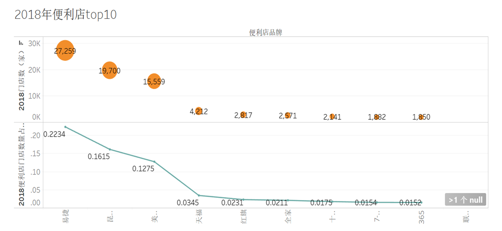

便利店 • 品牌前十

美宜佳，7-11，全家，罗森，喜士多，快客……这些便利店品牌，你眼熟吗？
出现在街头巷尾的便利店，有些名字你可能已经熟识，有些名字你可能还觉得陌生。大大小小的品牌有几十种，繁多得令人眼花缭乱。在2018年，便利店榜单前十的品牌，在我国的门店数均超过一千间。而身居榜首的冠军——易捷， 2018年持有的门店数量高达27259间，门店数量占比22.34%。

而在排名中，外资便利店品牌仅有三家，分别为7-11、罗森与全家。而令人惊讶的是，那些“名不见经传”的本土品牌却占得七席：美宜佳、红旗、快客、良友便利……你可能很少见到，甚至可能从未听闻过。 这也并不奇怪，与外资品牌几家独大的现状不同，我国本土便利店品牌各自占领一方市场，分布区域相对较为集中，并未在全国市场大面积铺开，因此你很可能对其他地方的便利店感到陌生。比如，广东的主要便利店品牌有美宜佳、天福、上好、7-11、中业爱民等，而浙江的主要便利店品牌则有十足、之上、VANGO、喜士多等，基本没有发生重叠。整体而言，这也形成了多方势力共同博弈，竞争激烈的行业现状。